From perceptrons to transformers
Part 1: The perceptron
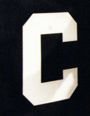
Modelling the neuron
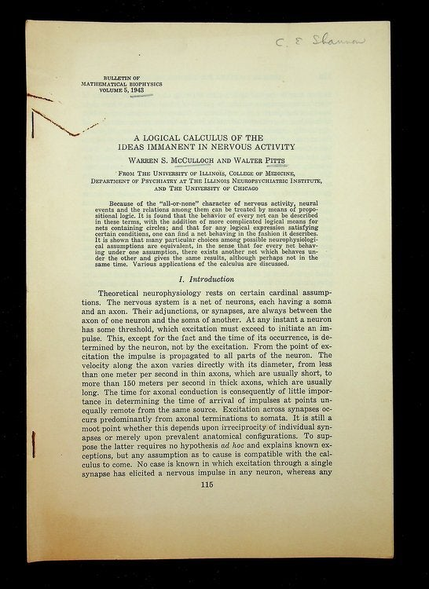
A Logical Calculus of the Ideas Immanent in Nervous Activity — McCulloch and Pitts (1943)
The basic model
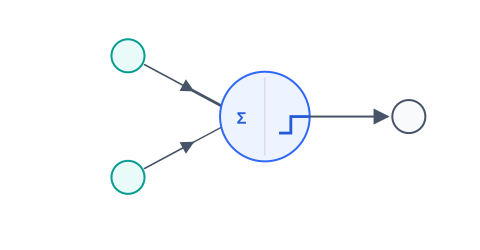
A weighted sum of inputs and a threshold function.
"Neurons that fire together, wire together"
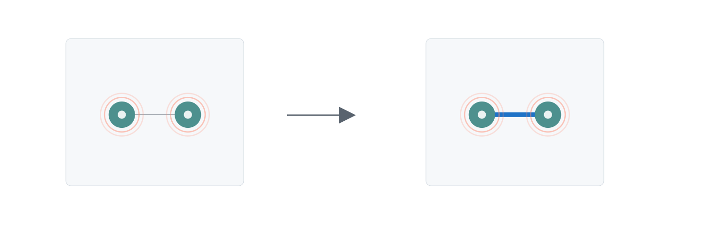
Donald Hebb, The Organization of Behavior, 1949.
The perceptron
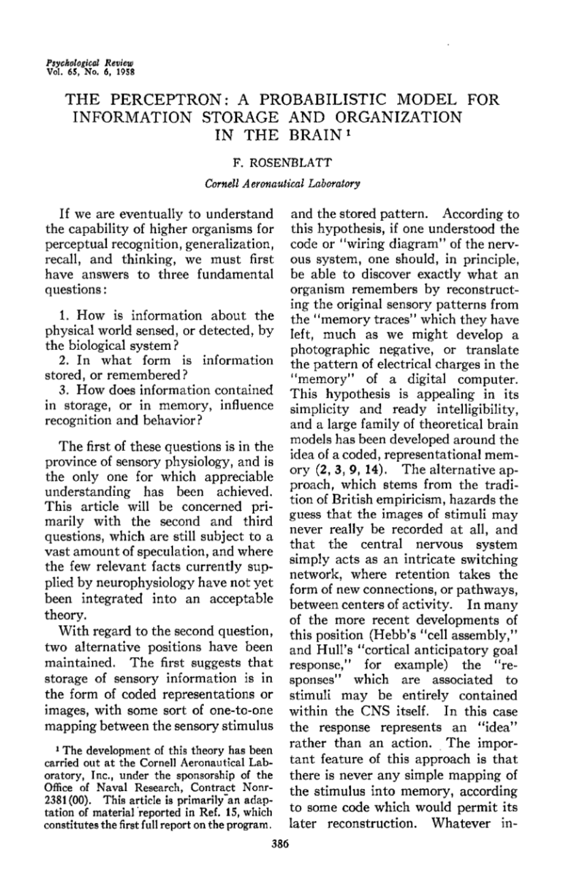
The Perceptron: A Probabilistic Model for Information Storage and Organization in the Brain — Frank Rosenblatt (1958)
The classification boundary
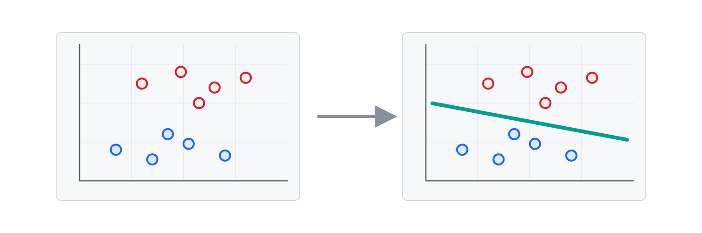
The line separates two classes of input.
Weights determine the slope
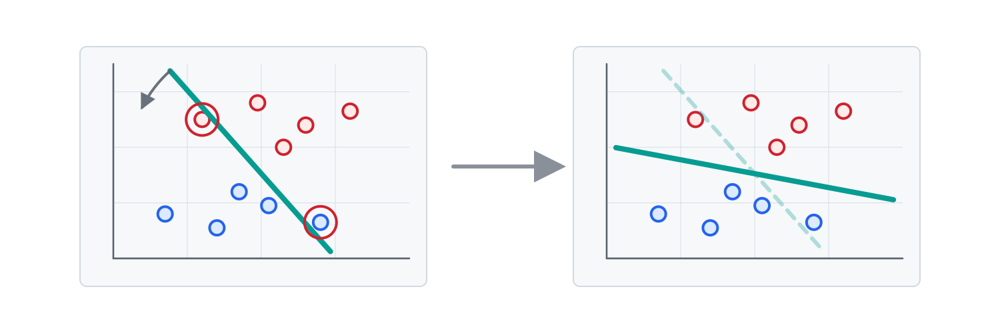
Changing the weights rotates the boundary.
If the slope is correct but the boundary is in the wrong place, what still needs to change?
Bias determines the threshold
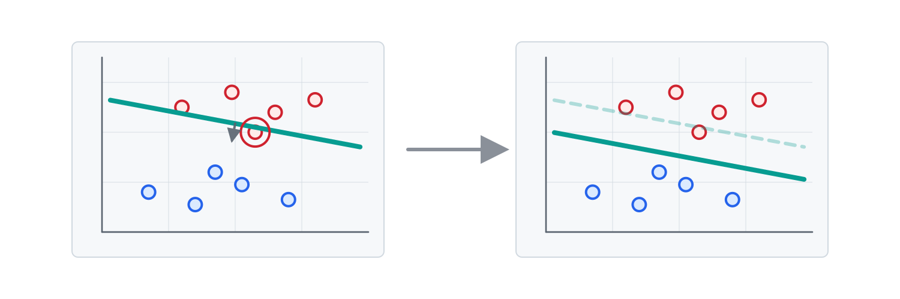
Changing the bias translates the boundary along its normal direction.
What's the final step?
Activation turns the score into a binary prediction
ŷ = 1 if w·x + b ≥ 0, else 0
What are the possible predictions in this case?
The error is calculated
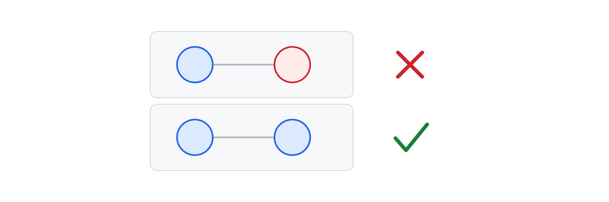
Error = Expected - Prediction
In this case, what are the possible values of the error?
The weights and bias are updated
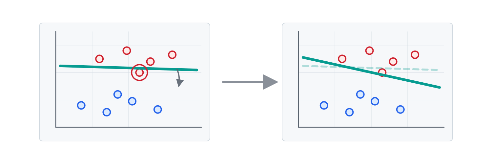
The boundary shifts.
After one correction, should we expect the whole boundary to be fixed?
Epochs are repeated passes
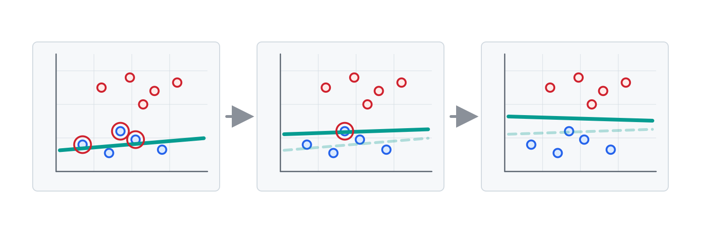
Repeated passes refine the boundary.
What would make another pass through the data pointless?
Linear classification has limits
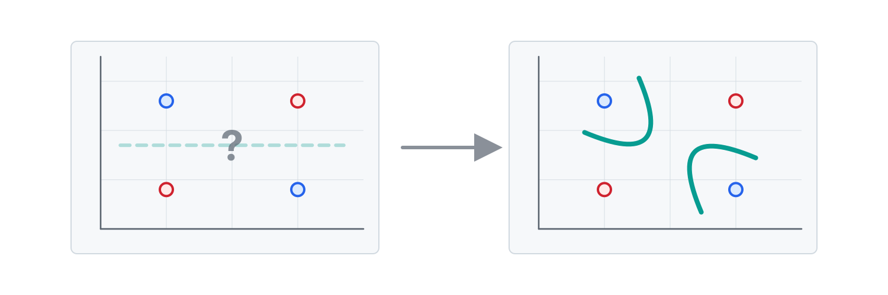
Classifying XOR.
How could we overcome this limit?
Layers can handle more complexity
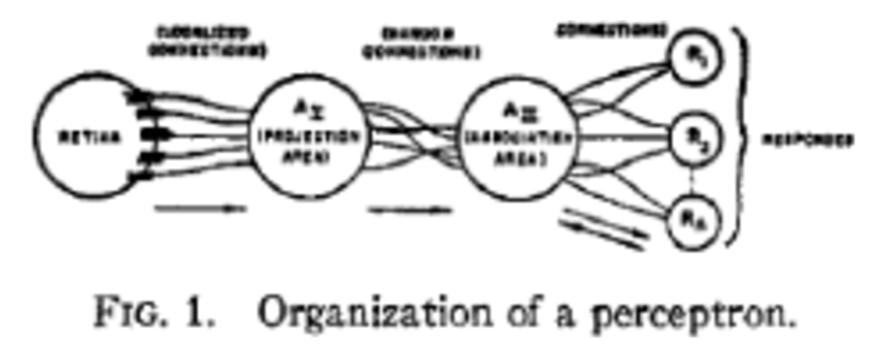
From Rosenblatt's original paper.
The perceptron was not just an idea

Mark I Perceptron machine, 1960.
What came next
- Backpropagation (1986)
- Convolutional networks (1998)
- AlexNet and ImageNet (2012)
- Word embeddings (2013)
- Attention (2014)
- Transformers (2017)
Whiteboard questions
- Draw a perceptron: inputs, weights, bias, weighted sum, activation function, and prediction.
- Draw a 2D classification problem: two feature axes, two classes, and a possible separating line.
- On the boundary, show what changing the weights does and what changing the bias does.
- Make an AND truth table, plot the four points, and draw a boundary.
- Make an XOR truth table, plot the four points, and try to draw a single boundary. Why does it fail, and what fixes it?
One more thing...
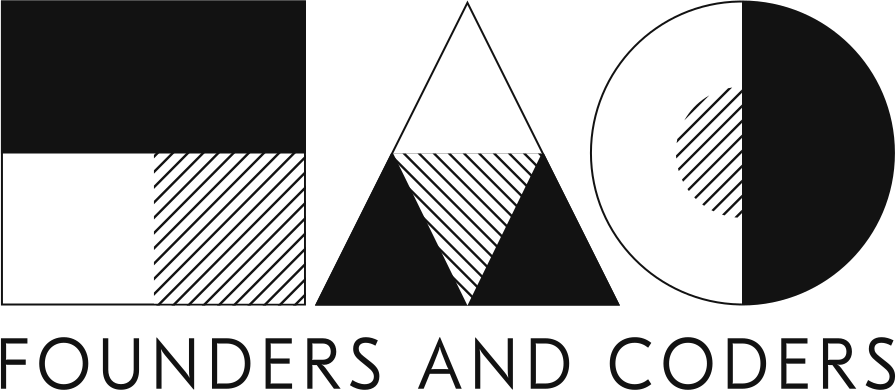